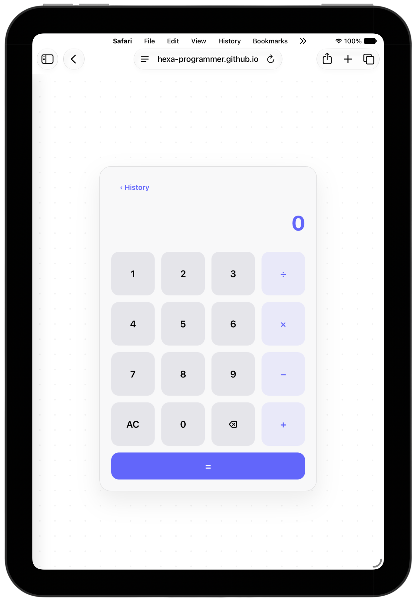

Minimal Calculator
A clean browser-based calculator focused entirely on essential arithmetic.
HexaCalculator is a minimal web calculator built for quick, focused calculations without leaving the browser.
It operates through a completely browser-based architecture and uses localStorage to retain calculation history.

A clean browser-based calculator focused entirely on essential arithmetic.
Previous calculations can be reviewed intuitively without leaving the application.
Calculation history is systematically stored locally using browser localStorage.
The interface adapts cleanly and dynamically across desktop and mobile screens.
No backend or external service is required to perform calculations or store data.
Built using straightforward HTML, CSS, and JavaScript without complex frameworks.
As the user performs calculations, JavaScript instantly evaluates the operation and updates the display. Results can be sent to history, which is appended to an array and stringified:
const history = JSON.parse(localStorage.getItem('calcHistory')) || [];
history.push({ expr: "12 + 5", res: 17 });
localStorage.setItem('calcHistory', JSON.stringify(history));When the application is reopened, the state is retrieved via:
localStorage.getItem('calcHistory')This ensures continuity across sessions securely on the device.
To run HexaCalculator locally:
git clone https://github.com/Hexa-Programmer/HexaCalculator.git
cd HexaCalculator
open index.htmlThis is a personal learning project and will continue to evolve over time.